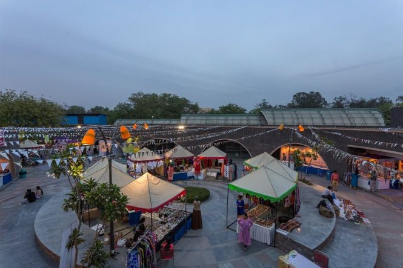

Top 12 Tourist Places in Delhi Everyone Needs to Visit
Introduction:
Delhi, the capital of Incredible India, is in no way any less than incredible itself. With some of the most beautiful and captivating Tourist Places in Delhi you always have something to look forward to within the city or even at the numerous Places to Visit near Delhi. From the historical Red Fort to the happening Dilli Haat and many others, the city is brimming with innumerable spots for people from all spheres of life. Be it Romantic Places in Delhi like Garden of Five Senses or those apt for family outings, such as Nehru Planetarium, Delhi has something for everyone. Also, with myriad great Hotels in Delhi for a comfortable stay, you can always be assured of a memorable vacation in the Dilwali Dilli.
Certainly then, it goes without saying that Delhi Tourism is one of the most sought attractions for travellers, both Indians and those from across the world. So let’s discover the amusing Places to Visit in Delhi, we are sure you will love.
Best Time to Visit DelhiIt is best to visit Delhi between the month of October and March when the temperature is pleasant enough for different Things to Do in Delhi. It is also the perfect time to explore the various Places to Visit Near Delhi as well.
Delhi Monuments
1. India Gate

2. Rashtrapati Bhavan
3. Red Fort

4. Qutub Minar

Delhi Temples
1.Bahai (Lotus) Temple

2. Akshardham Temple

Delhi Parks & Museums
1. Garden of Five Senses

2. National Museum

Delhi Markets, Food & Entertainment Zones
1. Connaught Place

2. Dilli Haat
3. Chandni Chowk

4. Hauz Khas